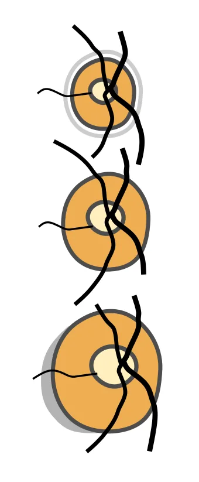
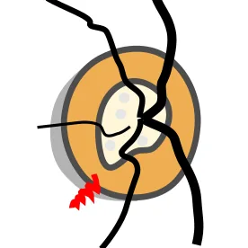

| C/D | 0-0.2 | 0.3-0.5 | 0.6-0.8 | 0.9-1 |
|---|---|---|---|---|
| ≥30 | ||||
| 25-29 | ||||
| 20-24 | ||||
| ≤20 |
Glaucoma risk
Assess glaucoma vision-loss risk in seconds.
Basics
More detail
C/D: match the closest optic cup/disc ratio.
IOP: use measured pressure when available, or palpation if not.
Risk: rim signs, fields, pupils, VA and risk factors refine the result.
Teaching aid, not final diagnosis. Details combined are powerful.
Grid: IOP + C/D; rock palp = emergency warning.
IOP: ≤20 +0 | 20-24 +1 | 25-29 +2 | ≥30 +3.
Add: rim +1; fields +1; pupils +0.5; VA +0.25-1; risks +0.2 each.
Shift: add-ons ≥2 move one row up; disc S +2/right, L -2/left.
| C/D | 0-0.2 | 0.3-0.5 | 0.6-0.8 | 0.9-1 |
|---|---|---|---|---|
| ≥30 | ||||
| 25-29 | ||||
| 20-24 | ||||
| ≤20 |

Gauge disc size:
> Larger discs are 'safer' <
